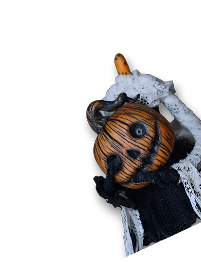

Izel
Black Sunflower Witch
Vera
pumpkin lady
Lucia
Consuelo
THE DOLL STORIES
Meet the little characters who inhabit the world of Black Willow. Each doll has its own personality, story, and unique details waiting to be discovered